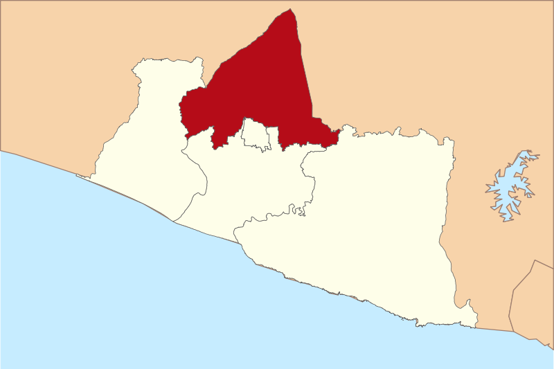
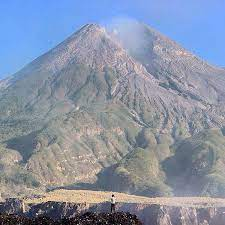
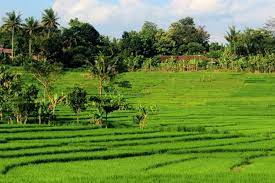

About Sleman?
Administrasi
Secara administratif Kabupaten Sleman terdiri dari 17 kecamatan, yang memiliki 86 desa dan 1212 dusun. Wilayahnya berbatasan dengan semua kabupaten yang ada di Provinsi Daerah Istimewa Yogyakarta dan juga Propinsi Jawa Tengah. Secara Geografis Kabupaten Sleman terletak diantara 110° 33′ 00″ dan 110° 13′ 00″ Bujur Timur, 7° 34′ 51″ dan 7° 47′ 30″ Lintang Selatan. Wilayah Kabupaten Sleman sebelah utara berbatasan dengan Kabupaten Boyolali, Propinsi Jawa Tengah, sebelah timur berbatasan dengan Kabupaten Klaten, Propinsi Jawa Tengah, sebelah barat berbatasan dengan Kabupaten Kulon Progo, Propinsi DIY dan Kabupaten Magelang, Propinsi Jawa Tengah dan sebelah selatan berbatasan dengan Kota Yogyakarta, Kabupaten Bantul dan Kabupaten Gunung Kidul, Propinsi D.I.Yogyakarta.
Geografi
Bagian utara kabupaten ini merupakan pegunungan, dengan puncaknya Gunung Merapi di perbatasan dengan Jawa Tengah, salah satu gunung berapi aktif yang paling berbahaya di Pulau Jawa. Sedangkan di bagian selatan merupakan dataran rendah yang subur. Di antara sungai-sungai besar yang melintasi kabupaten ini adalah Kali Progo (membatasi Kabupaten Sleman dengan Kabupaten Kulon Progo), kali Code, kali Kuning, kali Opak dan Kali Tapus.
Tata Guna
Tanah Hampir setengah dari luas wilayah merupakan tanah pertanian yang subur dengan didukung irigasi teknis dibagian barat dan selatan. Keadaan jenis tanahnya dibedakan atas sawah, tegal, pekarangan, hutan, dan lain-lain. Perkembangan penggunaan tanah selama 5 tahun terakhir menunjukkan jenis tanah Sawah turun rata-rata per tahun sebesar 0,96 %, Tegalan naik 0,82 %, Pekarangan naik 0,31 %, dan lain-lain turun 1,57 %.
